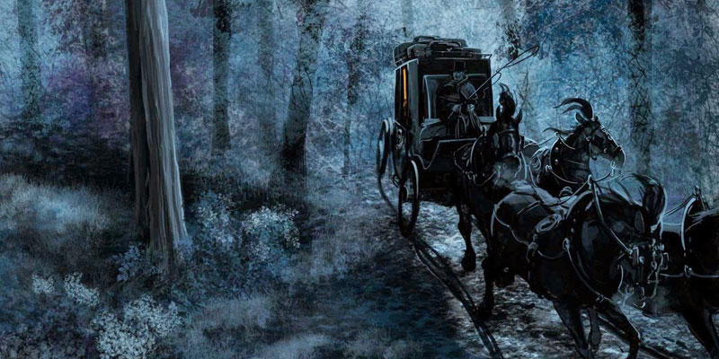

El carretón de la muerte
Las noches de San Pedro Tlaquepaque de ayer, eran otras noches.
Tenebrosas y profundas. Oscuras y Silenciosas. Ni el sistema “Vergara” de
iluminación, ni el arco voltaico en el siglo XIX, cambiaron las sombras de las tinieblas,
hasta que la luz eléctrica se inauguró el 16 de Agosto de 1898.
Se alumbró la presidencia, el parián y algunas calles.
Un foco en cada esquina de 25 bujías, no fue aún suficiente para espantar
las consejas sobre muertos y aparecidos para espantar las consejas sobre muertos y aparecidos.
Ni las casonas, en noches de tertulia, profusamente iluminadas con los sistemas que fuera,
pudieron ahuyentar el duende de la fantasía. Las leyendas y cuentos
sobré animas eran temas de conversación cotidiana. Las almas eran crédulas y las personas
proclive al pavor, al susto, al terror.
El mes de octubre es como los demás, si no fuera por la luna, un día de todos ellos,
es luna llena, esa noche el satélite natural de la tierra está más brillante.
Es cuando faltan unos días para el Día de Muertos.
Es noche quieta y de inquietos luceros, es cuando los parroquianos han visto el carruaje de la muerte.
Los más entendidos en la materia, esa noche no salen de sus casas.
Se encierran a piedra y lodo. Al filo de las 12 de la noche, ni por asomo miran por sus ventanas,
pues es frecuente oír el paso de la carreta. Su caminar es inconfundible:
Cruje, pero no como los demás. Empieza como un rechinido alto y termina en bajo.
Molesto es el estridulo. Es como el pito de calabaza que baja a clarinete, de aquí a saxofón para terminar en trombón o en tuba.
Ese extraño carromato no lleva prisa. Pasa lento y nadie sabe de dónde sale.
De repente ya está rodando. Por cualquier calle aparece en Santa María,
Santo Santiago, San Juan o San Francisco. Dicen que va de un barrio a otro. De crucita en crucita.
Sucede una cosa rara. Siempre sale en luna llena de octubre, a unos días del Día de los fieles difuntos.
Hay otros en que no espera la luna llena para salir.
Viene también en noche de aguaceros y tormentas, cuando el aguacero inunda las calles, plazas y callejones.
Es el carro de la muerte, un coche arrastrado por un jamelgo, flaco y cojo, y que es reconocido por su rítmico andar,
su eterno chirriar. En el pescante va una señora tilica y ñeñga lleva las riendas del rocín. Los perros ladran.
La madona no se inmuta, solo voltea y enseña los dientes.
También se dice que pasa por todo el pueblo y que la carraca lleva un ataúd al Panteón.
Una de esas noches, un parroquiano asomó al escándalo y en el momento un rayo dio
en la torre del templo: la iluminación momentánea le hizo ver una escena escalofriante,
pues la señora calaca, el penco cojo. En la galera arrastrada por el rocín de un ataúd y en él,
tendido entre cuatro velas el curioso que se asomó. El hombre, lánguido como
un difunto, se le puso blanca y erizada la cabeza, y cano de la impresión se quedó y así murió.
Dobles se dieron al día siguiente y una misa de cuerpo presente en el templo. Recibía responsos el compadre de la visión,
el que iba entre las cuatro velas, el que se asomó para ver la carreta de la muerte.
Por eso es costumbre arraigada oír y cerrar las ventanas inmediatamente;
en cuanto se escucha la carroza todos cierran. Los curiosos pagan con la muerte su indiscreción.
No quieren ni ver, ni oír
